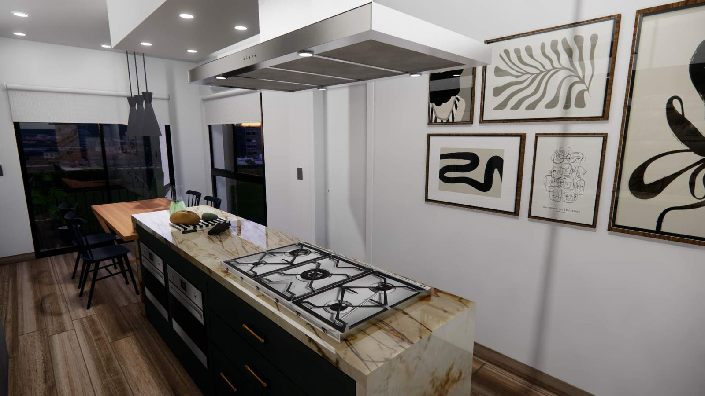

Cocina colores calidos

Una cocina con colores cálidos es un espacio acogedor y acogedor que transmite una sensación de calidez y comodidad. Los tonos tierra como el marrón, el beige, el naranja y el rojo suelen ser los protagonistas en este tipo de cocinas, creando un ambiente acogedor y relajante. Estos colores pueden estar presentes en las paredes, los muebles, los accesorios decorativos o incluso en los electrodomésticos, aportando calidez y personalidad al espacio. Además, la combinación de colores cálidos con materiales naturales como la madera o la piedra crea una atmósfera rústica y acogedora, ideal para disfrutar de agradables momentos en compañía de familiares y amigos.
Cocina comedor

Un cocina comedor es un espacio dentro de una vivienda o establecimiento donde se encuentran integrados la cocina y el comedor. Es un espacio multifuncional que permite preparar alimentos, cocinar y comer en un mismo lugar. Por lo general, este tipo de espacios están diseñados de forma integrada para facilitar la interacción entre quienes cocinan y quienes comen, creando un ambiente acogedor y familiar. Puede contar con una isla central, electrodomésticos empotrados y una mesa de comedor cercana para facilitar el traslado de los alimentos.
Cocina colores frios

Los colores fríos como el blanco, gris, azul y verde son una elección popular para la cocina debido a su capacidad para crear un ambiente relajante y luminoso. Son ideales para espacios pequeños, ya que reflejan la luz y hacen que la habitación parezca más amplia. Además, son fáciles de combinar con otros tonos y accesorios para crear diferentes estilos. En términos de limpieza y mantenimiento, son más fáciles de mantener impecables, lo que garantiza que la cocina se vea ordenada y acogedora en todo momento.